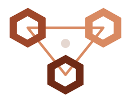
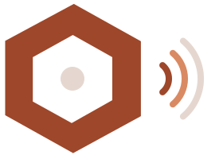

Foncier sécurisé, marketing digital, marque, fund dressing et formations
Nous intervenons comme un bouclier juridique pour vos acquisitions au Bénin et comme un accélérateur d’autorité pour vos entreprises : consultance en marketing digital, stratégie de marque, préparation de dossiers de financement et formations en communication. Voici nos cinq expertises.
Réquisition cadastrale et contrôle ANDF
Interrogation des registres officiels de l'Agence Nationale du Domaine et du Foncier. Vérification de l’existence réelle du Titre Foncier, de l'identité du propriétaire légal et de l'absence de charges ou hypothèques.
Bornage contradictoire et constat du géomètre expert
Descente contradictoire sur les lieux avec géomètre assermenté. Vérification physique des limites parcellaires en présence des riverains pour exclure tout empiètement ou contestation de mitoyenneté.
Sécurisation notariée et acte authentique
Rédaction du contrat de vente par-devant notaire territorialement compétent en République du Bénin. Versement des fonds sur compte séquestre notarié sécurisé.
Mutation et remise du titre foncier définitif
Suivi administratif rigoureux jusqu'à l'inscription au Livre Foncier et la remise en main propre de votre Titre Foncier individuel à votre nom ou au nom de votre entreprise.
Inspections vidéo et drone 4K
Visites inopinées de vos chantiers. Transmission de vidéos haute définition géolocalisées avec horodatage certifié pour contrôler l'avancement réel des travaux.
Audit des devis et décaissements
Contrôle technique des factures de matériaux (ciment, fer, agrégats). Vous ne débloquez les tranches financières qu'après validation de conformité par nos techniciens.
Gardiennage et clôture de parcelles
Sécurisation physique immédiate de vos terrains : pose de plaque officielle IMIS AFRIKA, bornage renforcé, entretien périodique et rondes de surveillance dissuasives.
Gestion locative sécurisée
Sélection rigoureuse des locataires avec étude de solvabilité, contrats d'enregistrement officiels et reversement ponctuel des loyers sur vos comptes bancaires.

Consultance en marketing digital
Audit de votre présence en ligne (site, réseaux sociaux, fiche Google), définition de la stratégie, plan de contenus et calendrier éditorial, puis pilotage ou transfert de compétences à vos équipes. Vous gardez la maîtrise de vos outils et de vos résultats.

Stratégie de marque, branding et identité institutionnelle
Création d'univers graphiques et narratifs tranchants (logotypes, chartes graphiques, argumentaires de vente) conçus pour inspirer le respect des investisseurs et éliminer toute perception low-cost.

Production audiovisuelle cinématographique
Tournages par drone 4K, captation de chantiers en immersion, films institutionnels de direction et spots publicitaires calibrés pour capter l'attention des décideurs sur LinkedIn, Meta et WhatsApp.

Marketing de performance et campagnes d’acquisition
Génération ciblée de prospects qualifiés pour pré-vendre vos programmes immobiliers ou développer votre portefeuille d'affaires. Gestion rigoureuse des campagnes au retour sur investissement mesuré.
Diagnostic de l’entreprise et du projet
Analyse de votre activité, de votre marché et de vos besoins de financement pour identifier ce qui rendra votre dossier convaincant.
Business plan et projections financières
Rédaction du plan d’affaires, structuration des hypothèses et des projections chiffrées, en cohérence avec la réalité de votre secteur.
Dossier de présentation et pitch
Note de présentation, présentation visuelle (pitch deck) et supports de marque soignés pour offrir une image professionnelle aux financeurs.
Préparation aux rencontres
Entraînement à la présentation orale, anticipation des questions des financeurs et appui à la constitution des pièces du dossier.
Communication d’entreprise
Message, image, relation avec les clients et les partenaires, prise de parole et supports de communication.
Marketing digital et réseaux sociaux
Stratégie de contenus, animation de communautés, publicité en ligne et mesure des résultats.
Marque et création de contenus
Identité, narration de marque, création de contenus photo et vidéo pour valoriser votre activité.
Vente et prospection
Parcours client, WhatsApp Business, suivi des prospects et conversion en clients.